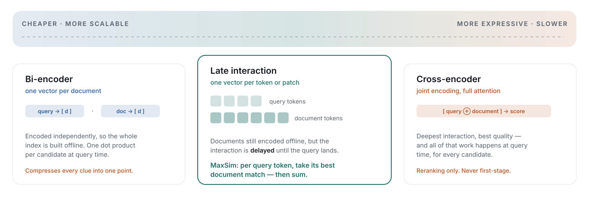

Building search that understands content — and running the models for it inside
European jurisdiction.
Kasper Rømer GrøntvedAI EngineerDraft
Structural draft. The flow is right; the specifics still need to come out of the source deck.
Draft
Before we start
Who is talking
Kasper Rømer Grøntved
AI Engineer at
Colourbox · Odense
Where I come from
A PhD in multi-robot systems at SDU, with a stay at Carnegie Mellon's Robotics Institute —
mostly about how one person stays in control of many autonomous things at once.
What I do now
Search at Colourbox and Skyfish: a stock library anyone can browse, and a DAM where every
customer only ever sees their own material. Two very different search problems, one team.
And what I keep arguing about
European data sovereignty — running the models on our own infrastructure rather than
renting someone else's. Which is most of what this talk is about.
ML and data at Colourbox
Thirty seconds, not three minutes. The only load-bearing part is the last card: everything in this talk follows from wanting to run it ourselves.
The robotics background is worth one sentence because it explains the bias — coordination, autonomy and evaluation under uncertainty are the same problems wearing different clothes.
Draft
The landscape
Two products, two retrieval problems
A stock library and a DAM system look similar from the outside. The search problem
underneath is not the same one.
Stock photo library
One shared catalogue, many unrelated buyers. Every user searches the same
corpus with no prior relationship to any of it. Intent is broad and visual — "two people
laughing in an office, lots of copy space".
Success is finding something good enough, fast. There is
rarely one correct answer.
DAM system
One customer's own assets, and they know what's in there. The user is often
looking for a specific known item — a campaign shoot, a signed contract, last year's product
video.
Success is finding the right one. A near miss is a failure,
not a compromise.
ML and data at Colourbox
This distinction drives every later architecture decision — recall-oriented browsing versus precision-oriented lookup. Make it early and refer back to it.
Draft
Setting the frame
Who here has tried agentic search?
Hands up — properly, I am going to count.
And who has asked Claude Code, Cursor or a deep-research tool
a question this week?
keep your hand up
ML and data at Colourbox
Stop and actually ask. Wait for the hands, and say the count out loud — usually only a scattering go up for "agentic search", because it sounds like a thing you would have had to set up on purpose.
Then the second question, and most of the room goes up. Do not explain the gap yet. Let them sit in it for a second, then advance.
Draft
Setting the frame
You are all already using one
When Claude Code answers a question about your repository, it is not reading the
repository. It plans a search, runs it, opens what looked promising, and goes again.
// where does this thing retry?grep-rn "retry" src/
src/http/client.ts:82 if (shouldRetry(res)) {
src/http/backoff.ts:14 export function backoff(n) {catsrc/http/backoff.ts// …exponential, capped at 30sgrep-rn "backoff(" src/// → enough. answer the question.
That is agentic
search. No one set it up — it came with the tool.
Why it works so well there
A repository is text, and grep is exact, instant and free.
The agent can afford to look twenty times, because every look costs nothing and returns
precisely what it asked for.
And that is the whole pattern
Plan, look, read, look again. No embeddings, no index, no ranking — just a very good
exact-match tool over a corpus made of tokens.
cursor, copilot, deep research — same loop
Now point the same loop at our corpus
grep on a JPEG returns nothing. A drawing has no tokens to match. A scanned
lokalplan is a picture of text, and the text is not in the file.
The tool this agent got for free does not exist for an asset
library — visual retrieval has to be learned, indexed and served before the agent has
anything to call at all.
ML and data at Colourbox
Land the reveal before anything else: the gap between the two shows of hands is the whole point — they have all been using agentic search, they just did not have a name for it.
This is the on-ramp, and for this room it is the most important slide in the first ten minutes. Start from the thing they already believe and only then make it unfamiliar.
Walk the transcript out loud. It plans a search, reads the two files that looked relevant, notices a second thing worth checking, searches again, and stops when it has enough. Nobody would call that a retrieval system, but it is exactly one — the agent's whole view of the repository is whatever grep handed back.
The reason it works there is worth naming explicitly, because it is the thing we do not get: exact match over text is free, instant and perfectly precise. There is no ranking problem, so there is no retrieval quality problem, so nobody has to think about any of this.
Then the turn. Our corpus is images, drawings, scanned pages and video. There is no grep for a photograph. Everything the rest of this talk is about — embeddings, late interaction, the funnel, the vector store — exists to build the tool that this agent already had for free.
Draft
Why agents amplify retrieval failure
Your agents are only as good as your retrieval
Agentic search is a loop — plan, retrieve, reason, act — run many times over one
question. Retrieve is the only step that gates what the model ever gets to see.
A bad result doesn't visit. It moves in.
A false positive is not a wasted slot on a page of results that the user ignores. It enters
the context, gets re-read at every later step, and shapes the next action.
Retrieval error does not just persist — it compounds.
Which is why the rest of this is retrieval
Not because the agent part is uninteresting, but because it is the part we can least afford
to get wrong.
dense embeddingsexact matchlate interactionthe funnelthe vector storeour own eval set
This is what agentic retrieval looks like · Jo Kristian Bergum, 20 May 2026 — median 24 search calls per question, GPT-5 with BM25 over 830 BrowseComp-Plus questions
This slide gives the talk its direction, so do not rush it. Everything after it serves the claim in the headline, which is Hugo Bowne-Anderson's phrase from a piece published a few days ago — worth crediting out loud, it costs one sentence.
Walk the diagram once, slowly, in this order: the loop runs, retrieve is the only box that touches the corpus, and everything it returns is written upward into the context window. Then the point: nothing is ever removed from up there. A false positive is not a bad result the user scrolls past — it is a document the model re-reads on every subsequent step and reasons from as if it were evidence.
The number is worth saying precisely. A median of 24 search calls per question is GPT-5 paired with BM25 on BrowseComp-Plus, ninetieth percentile 35, maximum 63. The retriever matters to that count: a weaker first stage makes the agent search more, so bad retrieval costs latency and tokens before it costs correctness.
The compounding is the part people underestimate, and it is worse for us than for a chat product, because our agents will have tools. A wrong document does not only produce a wrong sentence — it produces a wrong action, on a customer's own asset library.
The chips are the map for the next half hour. Say we come back to this exact question at the end, with two papers arguing it from opposite directions.
Draft
The hard part
The cold start problem
A DAM tenant arrives with assets and no behavioural signal whatsoever.
No clicks, no queries, no history. Everything that makes a stock catalogue
rankable has to be earned over years. A new tenant has none of it on day one.
Metadata is whatever they had. Filenames, inconsistent tags, empty
description fields — sometimes nothing but IMG_4821.jpg.
And they judge us immediately. The first search a new customer runs is
the one that decides whether they trust the product.
Why content understanding is the answer
If the model reads the asset itself, day-one quality no longer depends on anyone having
labelled anything.
That reframes search from a behavioural problem into a
representation problem — which is a problem we can actually solve offline, before the customer
ever logs in.
ML and data at Colourbox
This is the strategic argument for the whole ML investment. If they only remember one slide from part one, make it this one.
Draft
The starting point
And the open data isn't there either
Danish and its neighbours are served by a handful of genuinely good open projects.
None of them can tell us whether search works on our customers' archives.
What does exist — and is good
Danish
Foundation Models — an open Danish consortium building models and, just as
importantly, curating the corpora behind them.
Danish Gigaword
— a deliberately broad open Danish text corpus, spread across domains rather than scraped
from one.
MTEB
— the Scandinavian Embedding Benchmark has moved into it, so the Nordic retrieval tasks now
live there. ScandEval shares much of the same pool.
The Nordic
Pile and the National Library of Norway's
NB AI-Lab — the same work, one border
over.
credit where it is due
Where all of it stops short
It is prose.
Text corpora and text benchmarks. Our assets are images, drawings, scanned PDFs and video.
It is general
domain. Nothing in it resembles one company's naming conventions, product codes
or internal shorthand.
It is not known-item
retrieval. Almost no public benchmark measures "did the right asset come
back first", which is the DAM question.
So the gap is not "Danish models". The gap is Danish retrieval
evidence on documents shaped like our customers' — and nobody is going to publish that
for us.
ScandEval · Scandinavian NLU and generation benchmark
ML and data at Colourbox
Be generous about the Danish projects — several people in this room will know them, and the argument is stronger if it is clearly not a complaint about Danish NLP. The point is a modality and task gap, not a language-resource gap.
Draft
The way out
So we build the data ourselves
Representative beats large. The only corpus genuinely representative
of our search problem is the one already sitting in our own storage.
Representative, not public. An eval drawn from our own assets measures
the product. One drawn from a public benchmark measures the benchmark.
We are the ones allowed to. Our own systems and storage — plus data we
collect from sources we have actually talked to. Not an indiscriminate crawl: a
permissioned one, with an agreement behind each source, and nothing
crossing a border to get labelled.
And it compounds. Every labelled query becomes an asset a competitor
cannot download. The moat is the eval set, not the model.
But there is a prerequisite
You cannot sample representatively from a corpus you do not understand. Before any of
this: what do we actually store, in which modality, for whom, and
how much of it?
That is the unglamorous half of data sovereignty: owning it is the
legal claim, knowing it like the back of your hand is what
makes owning it worth anything.
the actual first step
And "eval set" just means a test suite for search
A list of real queries, and for each one the asset that
should come back — plus a number saying how often it did. Same idea as the tests you
already write: the assertion is just "the right thing ranked first" instead of
"the function returned 4". Everything after this slide depends on having
one.
ML and data at Colourbox
This is the hinge of part one. Everything after it — the modality mix, the model choice, the eval design — is downstream of knowing the corpus. Say the last line slowly.
Draft
Know your corpus
Know what you store and serve
A DAM tenant's archive is not a folder of photographs.
Kommuneplaner
geoimagetext
Lokalplaner
drawingpdftext
Historiske arkiver
textscanocr
Teknisk dokumentation
drawingpdftable
Produkt- og feltbilleder
imageexifcaption
Inspektions- og mødevideo
videoframestranscript
Six things a customer calls
"our files". Six different failure modes — and only one of them is solved by
reading a caption.
ML and data at Colourbox
Point at the tiles rather than reading them out. If the room is Danish, these are recognisable on sight; if not, the shapes still carry it. The takeaway is modality heterogeneity, which is the argument for a representation that can hold structure — the next few slides.
Draft
The tradeoff without data
The trap in our own query logs
Our customers have only ever had keyword search. So that is what they type — and if we
learn from it uncritically, we will carefully rebuild it.
1
They type what has worked
Filenames, product codes, exact tokens. Nobody types "two people laughing in an
office" into a system that has never once rewarded it.
2
The logs inherit the habit
Sample an eval set from those queries and nearly every relevant judgement turns out to be
satisfiable by exact match. The bias is now baked into the instrument.
3
The eval certifies the baseline
A semantic model scores worse on our own benchmark than the filename search it was
meant to replace. The model is not wrong. The ruler is.
Which makes the model choice and the eval choice one decision
A keyword-shaped eval systematically flatters sparse and exact
matching and systematically punishes dense semantic
embeddings — so reading "dense versus sparse" off that eval is how you conclude, wrongly,
that semantics does not help here. We come back to this when we pick models, because it is the
same trap wearing a different hat.
ML and data at Colourbox
This is the slide that stops someone in the room saying "just A/B it on the logs". You cannot A/B your way out of a biased instrument. Mitigations worth mentioning if asked: seeded semantic queries written against the corpus, known-item tasks constructed from asset content rather than from logs, and interleaving rather than absolute comparison.
Draft
Orientation
Resetting the baseline
Single-vector dense search uses one fixed-size embedding for the query,
and one for each asset.
queryq
q1q2q3q4
Encoder
pool
documentd
d1d2d3d4d5d6
Encoder
pool
one similaritypool(q) · pool(d)
Encoded independently
Query and document never meet during encoding — so the whole document side is prepared
offline, and query time is one similarity search.
But it makes one strong bet
That pool step preserved every clue a future query might care about — decided
before anyone knew what would be asked.
ML and data at Colourbox
Keep this tight. It is a shared-vocabulary slide, not an argument. The argument starts next.
Draft
Part two
EU sovereignty
Where the weights come from, and where they run.
Draft
The awkward fact
The open models are mostly not European
Open weights and European provenance are two different things, and it is worth being
precise about which one you are buying.
Where it was trained
The strongest open vision and embedding models come overwhelmingly from US and Chinese labs.
That is simply the state of the field.
provenance
Where it runs
Open weights mean we can pull them onto our own hardware. Nothing leaves. This is the part
we fully control — and it is the part that matters legally.
what we decide
Where the data goes
A hosted API means customer assets cross a border and a jurisdiction on every request. Open
weights on EU infrastructure means they never do.
the actual question
ML and data at Colourbox
Be honest here — pretending there are EU-native models at frontier quality for every task would not survive questions. The defensible claim is about processing and data residency, not about the weights' passport.
Draft
The commercial case
Why customers keep asking
Sovereignty started as a procurement checkbox. It is turning into a reason people
switch vendor.
Public sector and regulated industries ask first. For them it is not a
preference, it is a condition of signing.
Being EU-owned is part of the answer. Not just EU-hosted — the company
holding the data is itself under European jurisdiction, with no foreign parent to compel.
The frequency is rising. It now appears in roughly 1 in 3 public-sector
RFPs we see, against 1 in 10 two years ago.
→
From cost to advantage
Self-hosting was originally the expensive path. When customers start requiring it, the
infrastructure we already built stops being overhead and becomes the differentiator.
the strategic turn
ML and data at Colourbox
Anecdotes land better than assertions here. Bring one real customer conversation if it can be shared.
Draft
Part three
How retrieval actually works
From one vector per asset to many — and why that choice decides what a search can
find.
Draft
The puzzle
Why do DAM users still search by filename?
If we have strong vision models and strong embedding models, why does
every customer still type a filename into the box?
They are not being primitive. Exact match
came back into fashion for a reason, and it is worth understanding which reason.
ML and data at Colourbox
Ask the room to guess before advancing. Most people answer "infra" — which is half right, and the other half is the interesting half.
Draft
The puzzle
Filename search is hard to beat — and not only on infra
The boring infra reasons
Zero infrastructure — it already ships with the product
No model to deploy
No index to maintain
Privacy by default
But also: why it sticks
Exact matching is extremely strong for filenames.
Granularity is non-negotiable — when you want
Q3_campaign_final_v2.psd, you want exactly that file.
Filenames and folder trees are structured data, and structure is
cheap to exploit.
So the bar for a learned retriever is high
It has to earn its keep by adding semantics without losing exact local clues —
and justify deploying a model and maintaining an index on top.
ML and data at Colourbox
The right-hand column is the part people underrate. Spend your time there.
Draft
The bottleneck
One vector has to carry every clue
A single query can hold several independent relevance constraints.
"two people laughing in a
bright office, wide shot, copy space on the left"
2 peoplelaughingofficewide shotcopy space left
↓ compressed into
[ single vector · dim d ]
→ diluted signal
"Copy space on the left" is a fact about a region of the image. Pooling decided
what to keep before it knew anyone would ask.
ML and data at Colourbox
This is not "a semantic question about authentication" — it is five constraints that all have to survive. This is the bottleneck to keep referring back to.
Draft
Capacity isn't the fix
Just increase the dimension?
The obvious instinct — and a clean result showing why it doesn't resolve the structural
problem.
LIMIT builds a toy corpus from random attributes and names; documents
hold combinations of them, and queries ask for those combinations.
It looks artificial — and it isn't. Product search has exactly this
shape.
The question it poses: can one point encode every useful combination of
evidence?
gaming monitor27"140 Hz
Three constraints that must all survive — exactly like subject × setting
× mood × framing across our catalogue.
Exact retrieval breaks the moment the user says "the beach shoot" and the asset
is called DSC02074.JPG, in /Uploads/2024-06/, description empty.
On LIMIT's synonym variant, BM25 collapses. Exact matching is only
a gift when the vocabulary lines up — and in a DAM, the uncurated folder is the default state.
So we want both
Exact-ish local evidence, which lexical search gives us free —
and soft semantic matching, which dense retrieval gives us free.
So instead of squeezing more into one vector — keep multiple local vectors, and delay
their interaction until the query arrives.
ML and data at Colourbox
This is the hinge of the talk. Pause before turning the page.
Draft
Escaping the ceiling
Late interaction sits in the middle
It keeps the bi-encoder's offline document encoding, but lets the query interact with
local document vectors during scoring.

That interaction has a name: MaxSim
For every query token, find its single best-matching unit of the asset —
then sum those best matches. One maximum per query token, no pooling and no averaging, so a
rare local clue survives instead of being averaged away.
And for us the unit is a patch
Text keeps one vector per token; we keep one per image patch. Same
operator, different unit — which is why the same retrieval path runs unchanged over photos,
PDF pages and video frames.
The key words are "don't pool" and "delay". Everything deployable about this approach comes from documents still being encoded offline.
Define MaxSim carefully here, because every later slide leans on it. Walk one query token: it looks at every unit of the asset, keeps only its best match, and contributes that one number. Sum over query tokens and that is the score.
The example worth saying out loud is the multilingual one: the customer types English, the asset was captioned in Norwegian. Exact match scores zero there, and a pooled vector has already blurred it. MaxSim can still find the one unit that carries the meaning.
The patch line is the bridge to the DAM. A page is an image with structure, so nothing about the operator has to change when we move from captions to documents.
Draft
Where this lands
The useful overlap
Multi-vector search sits where the two things we wanted actually meet.
Lexical search
Exact granularity
Local clues survive intact. Semantics do not.
Dense search
Soft semantic matching
Meaning survives pooling. Local clues may not.
Multi-vector search
Both, at a price
Late interaction tries to keep exact local evidence and soft
semantic matching — for more storage and more scoring work.
And the bill
One vector per patch instead of one per asset — ~1,000× the vectors
and ~8× the index bytes after 2-bit residual compression — and
scoring is no longer a single dot product. Viable as a reranker over a
dense first stage; harder as the first stage itself.
So: which product?
Stock browses a shared catalogue — dense, and stay dense.
DAM looks for one specific asset, where a near miss is a failure. That is
where the patch-level index cost is worth paying.
End by pointing people at the original for the field cases and production objections. This primer deliberately stops here.
Draft
Part four
Search in our systems
Where each of these actually ends up.
Draft
Product one
Stock: visual retrieval
Broad intent, one shared catalogue, and a user who wants to browse rather than locate.
Recall over precision. Twenty good options beat one perfect one, because
the buyer is choosing on taste we cannot model.
The query is visual, not lexical. Mood, composition, colour, copy space —
none of which anyone reliably typed into a metadata field.
Dense embeddings fit this well. The compression that hurts precise lookup
is far less costly when the target is a whole region of the space.
Verdict: dense, and stay dense
The compression that ruins a precise lookup costs far less when the target is a whole region
of the space. Paying patch-level index cost across the shared catalogue buys us little here.
First internal pass: +6 nDCG@10 as a reranker over the dense top-200.
Whether that changes what buyers actually license is still unmeasured.
Tie this back to slide 3: recall-oriented product, recall-oriented architecture.
Draft
Product two
DAM: mixed modality, mostly visual
Images, video, PDFs and a long tail of everything else — inside one search box, over
one customer's own material.
Images
The bulk of it, and the best-understood case. Same visual
encoders as stock, different precision expectations.
Video
Sampled to frames, which turns one asset into many vectors and
makes the temporal question — which moment? — unavoidable.
PDFs
Where visual document retrieval pays off: page images rather
than extracted text, so layout, tables and figures stay searchable.
Everything else
Office files, audio, archives, formats one
customer cares about deeply and nobody else has. The long tail is real.
The unifying move
Treat almost all of it as a visual retrieval problem and the DAM stops
needing one pipeline per file type. A PDF page is an image with structure; a video is a
sequence of them.
And this is where patches pay
Once every asset is patches, MaxSim applies unchanged — and the DAM is precisely the product
where a near miss is a failure. This is where late interaction earns its index
cost.
ML and data at Colourbox
The PDF-as-image point is the one people find surprising — it is worth an extra beat, and it is where late interaction has the clearest case.
Draft
Why visual retrieval at all
A picture is worth a thousand words
Sometimes the evidence you are looking for is a clean line of text. Sometimes it is
simply not.
Figure: Amélie Chatelain,
Late Interaction
Field Guide · The Garden of Earthly Delights, H. Bosch, Museo del Prado ·
example from Benjamin Clavié's talks
the query
"painting with a guy stuck
in a mussel"
What a caption pipeline gives us
No text on the asset at all. To match this query the pipeline would have to have guessed,
at indexing time, that this one odd detail would matter — or be exhaustively
descriptive about everything.
This is our contributor metadata problem
A stock contributor types eight keywords. A DAM customer types none. Neither of them
anticipated the query — and a caption is a lossy, one-shot bet made before the query exists.
Read the query out loud, then let people hunt for it in the painting. It takes a while, and that is the point.
A traditional text pipeline cannot touch an image without a captioning model in front of it. And captioning is exactly where this breaks: the model would have to decide in advance that a man stuck inside a mussel shell is the salient fact about this painting. It will not. It will say "surreal triptych with many figures".
Bring it home: this is our metadata situation with the labels changed. Contributor keywords on stock, near-nothing on a new DAM tenant. Direct visual retrieval keeps regions of the asset available for matching instead of forcing everything through a text bottleneck first.
Draft
Why visual retrieval at all
And in a DAM, the picture is usually a page
Paintings are a fun example. A customer's own report PDF is the case we are actually
paid to solve.
"is there uniform interest
across all EU regions in adopting Individual Learning Accounts?"
What OCR gives us
The caption, if we are lucky, and a handful of country labels. The answer lives in the
spatial pattern of the shading — which no OCR pass and no generic caption
preserves.
Preprocessing is not neutral
Whatever OCR or captioning fails to keep is gone before ranking starts.
That is an irreversible decision taken at index time, by a component nobody thinks of as part
of the ranker.
The natural objection to the painting slide is "I'm not retrieving paintings". This is the answer. A very large share of enterprise documents carry their meaning in figures, and our DAM tenants upload exactly this kind of material.
The last card is the one worth pausing on. We tend to treat OCR and captioning as plumbing, upstream of the interesting part. But they decide what the ranker is even allowed to see. A pipeline that reads "map of Europe" off this page has already lost, no matter how good the retriever behind it is.
Note in passing that this happens to be an EU policy report — the kind of document a public-sector tenant would want indexed without it leaving European infrastructure.
Draft
Going multi-vector · ColPali
From tokens to patches, on a page
The operator we already built. Cut the page into a grid of patches,
keep one vector per patch — and we can then see where the score came from.
Text keeps token vectors along a sequence; a page keeps
them across a two-dimensional layout. Pages, photos and frames are all patch grids —
one pipeline.
so let's ask one
"is there a rise in CDER
NME submissions from 2007 to 2008?"
CDERNME20072008
Which regions should it notice? Three
unrelated parts of one page.
And we can show our work
Scoring is per query token against per patch, so the match can be
highlighted on the page.
We already did the operator work back at the late-interaction slide — this is that same MaxSim, on a real page. The only genuinely new thing is the geometry: a sequence of token vectors becomes a grid of patch vectors. Same encoder-offline, same scoring, same reason it works — local evidence stays independently addressable.
The first card carries the strategic payoff and is worth saying explicitly, because it is what justifies the index cost: one representation for images, PDF pages and video frames means one pipeline instead of four.
Then make the room commit before advancing. Read the query out, ask which regions of the page they would want the retriever to look at, and let someone actually answer. The next two slides show the real heatmaps one token at a time, and the payoff is much better if people have guessed first.
The explainability point in the dark card is not decoration — DAM customers ask for it, and a single pooled vector fundamentally cannot give it to them.
Draft
Interpretability
The token 2008 lands on the axis
Best-matching patches for one query token. The strongest single cell is the
2008 tick label, with a warm band along the whole x-axis.
One beat per token. Here: the model has found the 2008 tick label, and it has also warmed the rest of the axis, which is the right neighbourhood.
Say the quiet part: nobody trained this model on "highlight the axis". The localisation falls out of keeping one vector per patch and never pooling them. Interpretability here is a free side effect of the architecture, not a feature someone bolted on.
Draft
From evidence to production
So why isn't this everywhere yet?
The evidence is strong and the operator is simple. What stops it is engineering —
three objections, in the order we hit them.
01
Storage
One vector per patch, across the whole catalogue.
02
Speed
Scoring is no longer one dot product per candidate.
03
Ecosystem
Which model, on which engine, and can we still swap it later?
Breath slide. Name the three objections, then say plainly that we have already conceded storage — the next slides are about speed and ecosystem, which are the ones with real answers.
Draft
The speed objection
Naive MaxSim is doomed
Compare every query token against every unit of every asset and the arithmetic ends
the discussion before we get to latency.
Every query token needs its own best match on the asset side.
~80
tokens per passage
All token pairs get scored inside a single document.
~9M
passages
Then repeat that all-to-all comparison across the corpus.
~23B
dot products, per query
At dimension 128. Not a first-stage plan under any latency budget.
Our version of the same multiplication
Patches per asset instead of tokens per passage; one tenant's
assets instead of passages. Same shape:
~1,030 patches × 240k assets in our
largest tenant × 32 query tokens ≈ 8B dot products.
We already conceded that late interaction costs index size and scoring time. This is where we answer how it is made to work.
Start with the honest worst case. If you take MaxSim literally — every query token against every token of every document — you get roughly 32 × 80 × 9M dot products at dimension 128 for MS MARCO. About 23 billion. That is not slow, that is impossible.
The important reframe: no serious system implements exact MaxSim over the whole corpus. MaxSim is the score we are trying to arrive at, not the plan for getting there. Everything in the next few slides is about reaching a good candidate set without paying the target cost everywhere.
Our numbers have the same shape with patches instead of tokens — I need to put the real ones in here before presenting.
Draft
Making it work
Every fast system is a funnel
Two things change on the way down: the set shrinks, the price per asset
rises.
Stage sizes are
provisional until we have measured recall against candidate count on our own corpus:
40k → 4k → 250.
The scorer · cost per asset rises ↓
1 · Candidate generation cheap
A deliberately coarse score over everything. This stage decides whether the whole thing is
affordable.
2 · Approximate MaxSim, then prune moderate
A more faithful score on far fewer assets, used to throw most of them away.
3 · Exact MaxSim expensive
Run only on the survivors — where we are willing to pay full price per asset.
The trade-off is one question: how many assets reach
exact MaxSim? Stage 1 is whatever is cheap enough to run over everything — an
approximate index like HNSW, sparse keys, or a coarse
clustering. That is what the next slides are about.
This is the pattern, and it is not exotic — it is the same funnel we already use everywhere else in search. Start broad and cheap, spend expensive scoring only on a small set.
Read it top to bottom: every asset gets a coarse score, we gather candidates, we prune with an approximate MaxSim, and only the survivors get the real thing. As the set shrinks we can afford more per asset.
So the knob is not mysterious. It is: how many assets survive long enough to receive exact scoring? That single number is what we tune against our latency budget.
I have deliberately left the stage widths blank. Her illustrative numbers were 9M → 100k → 1k → top-10 on MS MARCO; ours have to come from measuring recall against candidate count on our own corpus, and I would rather show nothing than show a number I made up.
The last card matters for the next slides: there is more than one way to build stage one.
Draft
Infrastructure · the vector store
You don't build that funnel. You configure it.
Every stage we just drew already exists as a feature of a modern vector database —
which is most of what one is.
stage 1 · narrow
An approximate index
Cosine against every vector is O(N·d) — fine at ten thousand assets, hopeless at
a hundred million. HNSW descends a navigable graph instead of scanning, trading
a little recall for a lot of time.
stage 2 · shortlist
Sparse keys and filters
Learned-sparse vectors cut it down further, and so does "only this tenant's, only
landscape, only after 2024". Making a filtered search stay fast is the
part people underestimate.
stage 3 · rescore
Late interaction on the survivors
Multivectors with a MaxSim comparator — the expensive scoring from earlier,
run only on what is left. Approximate first, exact last.
Library or database?
faiss and hnswlib are the index. Qdrant, Milvus, Weaviate, Vespa and
pgvector are the database around it — filters, persistence, replication, and add,
update and delete without a rebuild. A DAM changes all day, so that second list is what decides
whether you can actually run it.
ML and data at Colourbox
The point of this slide is relief, not detail: the funnel from the previous slide sounds like a research architecture, and it is actually a config file. Say that plainly.
Map the three cards onto the three stages out loud — they are deliberately in the same order and use the same words.
The filtering line deserves one beat. Post-filtering is the naive implementation and it silently destroys recall: you ask for the hundred nearest and then throw away the ninety-eight belonging to other tenants. Everything interesting in these systems is about making a filtered approximate search stay fast.
If someone asks "why not just pgvector" — completely reasonable at small scale, and one fewer system to run. It gets harder when you want multivectors and quantization on a corpus this size.
Draft
Infrastructure · the vector store
Where the vectors actually live
For us that database is Qdrant, self-hosted — and it is the one
place where the retrieval argument and the sovereignty argument turn out to be the same argument.
One engine, three retrieval paths
Dense HNSW with payload filtering, learned-sparse vectors, and multivectors with a
MaxSim comparator. The dense first stage and the late-interaction rerank are the same
system, not two we have to keep consistent.
dense · sparse · multi-vector
The funnel becomes a query
Prefetch generates candidates cheaply, the outer query reranks the survivors with MaxSim,
and quantization keeps the index affordable — the three stages we just drew, expressed as one
round trip instead of three services.
prefetch → rerank, one request
And it stays ours
Apache-2.0, written in Rust, one binary on our own nodes — and the company behind it is
Berlin-based. Sovereignty here is not a clause in someone's data-processing addendum; it is a
process we start ourselves.
back to part two
Where a dedicated service still helps
A general store is very good at all of it and best-in-class at none. When late interaction
is the first stage over a large tenant, an engine built for nothing but multi-vector
retrieval still beats it on that one axis — because the whole system is designed around that
single index instead of around five workloads.
So the rule we actually apply
General store by default; a dedicated engine only when the multi-vector index is measurably
the bottleneck and the workload justifies operating a second system. Today that threshold sits
around the largest 2 tenants.
This is the slide that turns the previous three from an architecture lecture into something we operate. The funnel is not ours to invent — it is prefetch plus rerank in a query body.
The reason one engine matters more than raw benchmark speed: a DAM index is mutable all day, and every extra store is another thing to keep consistent with the assets, another backup story, another delete path to get right under GDPR. Two systems is a real operational cost and should be earned.
Do not oversell Qdrant against the specialised engines. On pure multi-vector first-stage throughput a purpose-built engine wins, and if that ever becomes our bottleneck we should use one — for that tenant, not for the whole product.
The Berlin point is worth one sentence and no more. It is a genuine reinforcement of part two, but the substantive claim was always about self-hosting rather than the vendor's postcode.
Draft
Infrastructure
The serving stack
Two engines, two different jobs. Picking per workload rather than standardising on one
is the whole trick.
Triton Inference Server
The workhorse for vision and embedding models: dynamic batching, multiple
frameworks behind one endpoint, ensemble pipelines so preprocessing and inference live in the
same request.
Right choice when the model is small, the traffic is bursty, and
throughput per GPU is what you are optimising.
indexing · embedding · classification
vLLM
The workhorse for generative and VLM workloads: paged attention, continuous
batching, an OpenAI-compatible surface so application code does not care where the model lives.
Right choice when sequences are long, output is autoregressive, and
KV cache is the binding constraint.
captioning · extraction · reasoning
Both run on our own GPUs — 2 nodes × 4 NVIDIA L40S — inside EU data
centres.
ML and data at Colourbox
Resist a stack-diagram-with-fourteen-boxes. The point is that engine choice follows workload shape, and both stay on our metal.
Draft
Agentic search · cost
The embedder's dilemma
Agents don't search once. When a workflow fans out fifty queries where a person
issued one, cost per query stops being a rounding error and becomes the architecture.
Figure 1 from El Assadi, Muennighoff & Lee,
The Embedder's Dilemma · COLM 2026.
Note the log scale on cost.
0.4
points apart
Best LLM (Gemini 3.1 Pro, 77.6) against best embedding model (77.2), over 37 tasks. In
aggregate, tied.
1,431×
the cost of closing it
USD 154 against USD 0.11 per benchmark pass — and 2.5–736× slower on the same GPU.
Our read
Embeddings on Triton carry the agent fan-out; vLLM is reserved for the reasoning-heavy step
that needs it — an agent already issues ~8× the queries a person
does.
Three things worth saying out loud beyond the numbers on screen. First, where it flips: LLMs genuinely lead on reasoning-heavy retrieval, embedding models lead on classification, and the two match on clustering, STS and pair classification — so this is a routing decision, not a winner. Second, reasoning tokens are 28–81% of LLM inference cost, and in their ablation lower reasoning budgets preserved or even improved retrieval quality — which is a knob we control because we host the serving stack. Third, the Pareto frontier holds the leading embedding models plus exactly one LLM, and that LLM buys 0.4 points for three orders of magnitude. For an agentic caller issuing many queries per task, that trade is not close.
Draft
Agentic search · the counter-example
And then someone trained a small one
SID-1 is an open 14B base, RL-trained end to end for exactly one job —
agentic retrieval. On its own benchmark it out-recalls the frontier models it costs a fraction of.
what it is
Trained for one job
Qwen3-14B, tuned with GRPO and no supervised warm-up, on synthetic multi-hop
questions built from document-to-document links. One model does the searching, the ranking and
the multi-turn reasoning.
Nobody told it to fan out parallel searches, or to read excerpts
first and full documents only when it needed them. It worked both out.
0.84
recall, against 0.78 and 0.64
GPT-5.1 (high) manages 0.78 and Sonnet 4.5 0.64 on the same
191 multi-hop questions — general knowledge, finance, science, legal and email.
four rollouts, fused with RRF
24×
faster, and far cheaper
5.5 seconds per question against GPT-5.1's 131 — and roughly
400× less per question than Sonnet 4.5.
the dilemma, from the other side
Our read
This is the previous slide answered from the other end. The frontier model is better at
everything in general and worse at this in particular, because the small one was trained
on the retrieval task that actually gets run. Which is the argument for owning our search
rather than renting it: the base is open weights and the method is published — the part
nobody can sell us is the corpus and the eval set we would train it against.
Put this straight after the embedder's dilemma, because it is the same graph read backwards. There, closing a 0.4-point gap cost 1,431×. Here, a 14B model closes the gap in the other direction by being trained on the actual task.
Be honest about the caveats or someone will find them. The 0.84 is the 4x setting — four rollouts in parallel at raised temperature, fused with reciprocal rank fusion — so it is buying some of that recall with test-time compute. The benchmark is their own 191 questions, half public and half written in-house, which is exactly the kind of home-ground advantage we would also have. And SID-1 itself is waitlisted, not downloadable.
The number to be careful with is nDCG. The headline claim here is recall, where the gap is clear. On nDCG the two are much closer — close enough that "outperforms the frontier" would be overstating it — so quote recall, and read the table again before quoting nDCG at all.
None of which weakens the point for us. The base model is open, the training method is published, and the thing that made it win was domain fit rather than scale. That is the most concrete evidence in the deck that a self-hosted retrieval model is a real option rather than a principled preference.
If asked "so should we train one?" — not yet. The honest sequence is the eval set first, then measure how far a good off-the-shelf embedder gets us, and only then consider training. This slide is a reason to keep the option open, not a plan.
Draft
Evaluation
A benchmark score is not a customer finding their Bergen shoot
Every reason to distrust a public number is stronger for us than it is for the people
publishing them.
Out of domain, by definition
A DAM tenant's corpus is one company's own material — their products, their people, their
naming conventions. No public model has seen it, and no public benchmark resembles it. Every
tenant is a distribution shift.
Our queries are not English web text
Danish, Norwegian and German as often as English — frequently mixed with a product code or a
place name in the same query. MTEB's English retrieval tasks say very little about that. From
our logs: 46% da, 21% en, 14% no, 9% de.
Two products, two eval sets
Stock is recall over broad visual intent — did anything good come back.
DAM is rank-one on a known item — did the asset come back. One number
cannot answer both. Today: 800 pooled graded stock queries, and
500 known-item DAM queries labelled by the tenant's own
librarians.
And on day one there are no clicks
Cold start again: a new tenant gives us no behavioural signal to A/B against. An offline set
of labelled queries over their own assets is the only instrument we have before
the customer's first search — and the first search is the one that decides whether they trust
the product.
Public benchmarks narrow the field to three or
four candidates. After that, only our own labelled queries can tell us anything.
This is the slide I actually want people to leave with. Public benchmarks narrow the field to three or four candidates; after that, only our own labelled queries can tell us anything. And note the cold-start link — on a new tenant we cannot wait for click data, so the offline eval set is not a nice-to-have piece of ML hygiene, it is the only measuring instrument that exists on day one. Building it is product work, not research work.
Draft
Back to infrastructure
Which is why we own the serving stack
Amélie's closing advice is a list of questions to ask your vector-DB vendor. On our own
Triton and vLLM, they are questions we answer for ourselves.
01
Swap the model
The zoo expands monthly. A checkpoint we can pull, serve behind the same Triton endpoint and
benchmark ourselves is a checkpoint we can replace — with no vendor roadmap in the way.
the zoo keeps moving
02
Re-index against our own eval set
An eval only means something if we can rebuild the index for a new candidate. Batch embedding
on our own GPUs makes re-indexing a decision we take, not an invoice we receive.
measure, then commit
03
Never leave the jurisdiction
Every eval run, every re-index, every captioning pass is customer material going through a
model. On our hardware in EU data centres it stays inside European jurisdiction throughout.
sovereignty, in practice
The trade-off stays ours
Quality against storage against latency against freshness — and it resolves differently per
product. Stock takes the dense, cheap-index end; DAM pays for
patches, because there a near miss is a failure. Owning the stack is what lets us sit at two points
on that curve at once — and change our mind when the next model lands.
Close the loop back to part three. The whole self-hosting argument was framed as sovereignty, and it is — but this is the second half of the return on it. Because we run the models, we can pull a new checkpoint on Monday, re-embed a sample of a customer's corpus on Tuesday and have a number on Wednesday. A hosted API gives you none of that: you cannot benchmark what you cannot re-index, and you cannot re-index a corpus you are not allowed to send. Sovereignty and the ability to keep improving turn out to be the same piece of infrastructure.
Where this goes
An agent searching a DAM needs all of it
Not five separate projects. Five preconditions for the same thing — and a DAM is where
they all bind at once: a customer's own assets, in every format, where a near miss is a failure.
It has to see
Content understanding over images, video, PDF pages and the long tail — because the evidence
is in the asset, not the caption someone forgot to write.
patches, not metadata
It has to be right
Late interaction where precision decides the outcome, and an eval set built from our own
customers' queries rather than a public leaderboard.
near miss = failure
It has to afford to ask
An agent fans out. The funnel, the compression and the embedding-first economics are what
make the fiftieth query as cheap as the first.
cost is the design
It has to stay ours
Self-hosted on EU infrastructure, so we can swap the model, re-index on our own terms, and
never move a customer's assets out of jurisdiction.
sovereign by architecture
Which leaves the interesting questions open
What does an agent need from search that a person never
asked for — an explanation, a confidence, a second opinion? What does our eval set become when the
caller is a machine that will happily ask a hundred times? And which of these do we build next?
Do not answer the three questions. This is the slide that should start the discussion, so stop talking and let the room take it. If it stalls, the one to pull on is the eval question — everyone in the room has an opinion about what "good" means for their own corpus, and that is exactly the conversation worth having.